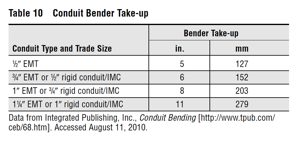
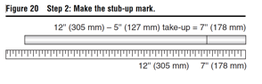
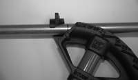
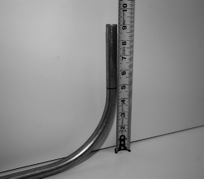

Step 1: Determine the bender take-up based on the type and size of conduit to be bent.
Refer to Table 10, if the conduit is 1/2" EMT, then bender take-up is 5" (127 mm). A piece of 3/4" EMT requires a bender take-up of 6" (152 mm).
(See UGLY's Conduit Bending manual, page 31)

Step 2: Determine which size of stub-up bend is needed, and make the proper mark on the conduit. If a 12" (305-mm) stub-up bend is needed on a piece of 1/2" EMT, you
must subtract the 5" (127-mm) take-up from 12" (305 mm). The bender take-up subtracted from the original conduit length equals 7" (178 mm). Mark the conduit 7" (178 mm) from the end.

If a 12" (305-mm) stub-up bend is needed on a piece of 3/4" EMT, you must subtract the 6" (152-mm) take-up from 12" (305 mm). This would give you 6" (152 mm). The conduit would then be marked 6" (152 mm) from the end.
Step 3: Make the stub-up bend. Once the stub-up mark has been made, insert the bender onto the conduit and place the conduit securely on the floor. The stub-up arrow should be placed on the stub-up mark.

Place one foot on the conduit and the other foot onto the bender foot pedal. Apply equal force with your hands and foot to ensure that the bender does not slip or rise.
Continue bending the conduit until the 90¡ marking on the bender is parallel to the conduit. For example, if a 9" (229-mm) stub-up bend is needed for a piece of 1/2" EMT, you must subtract the 5" (127-mm) bender take-up from 9(229 mm); thus you should mark the conduit 4" (102 mm) from the end.
After you have completed the bend, position the conduit so that the end is facing up and measure the distance from the floor to the end of the conduit. It should measure approximately 9" (229 mm).
